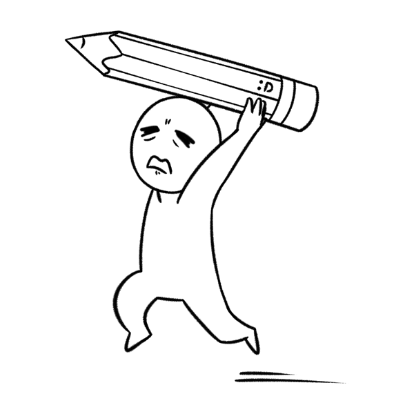

Next quiet time
00:33 Fri
Work · Vibrate · in 1 day
?
Last week · 14h 20m quiet
Work 9h 50m · Study 4h 30m
›
Week
Month
Import timetable
MTWTFSS
Work · Vibrate
09:00 – 17:00

MATH 101 · Study
19:00 – 21:00
+
thumb's resting zone
A · Report strip under the status card ✓
It replaces the grey "This week · Work 4h" line, so it reads as the week's numbers, near the top where the eye lands first. It's a full-width 48dp strip with a "›" and a yellow dot on Mondays when a new report is in. It's far from the + button, the switches and the swipeable pages, so a thumb resting at the bottom won't hit it.
Next quiet time
00:33 Fri
?
This week · Work 4h 1m
Week
Month
09:00 – 17:00
B · Icon next to "?"
Two small round icons stacked together are easy to mix up: you reach for "?" and get the report. An unlabeled chart icon also says little.
00:33 Fri
09:00 – 17:00
19:00 – 21:00
📊 Report
+
thumb's resting zone
C · Button at the bottom, beside +
Very visible, but it sits right where the thumb rests and next to +, so it gets tapped while reaching for +. It also covers the last card.
Why A
- Easy to spot: top third of the screen, full width, a small bar-chart icon, real numbers ("14h 20m quiet") that invite a tap.
- Hard to hit by accident: 8dp or more from the status card, "?" and the Week/Month chips. Nothing else in that row, and no swipe area under it (the day pager starts lower). A plain tap opens a screen that only shows numbers, so a mistaken tap costs one Back.
- Tells you when there's news: a yellow dot from Monday 00:00 until the report is opened.
- Screen readers: "Last week's report: 14 hours 20 minutes quiet. Button."
- First week: "Your first report arrives Monday" (not tappable yet), so the strip is never empty.